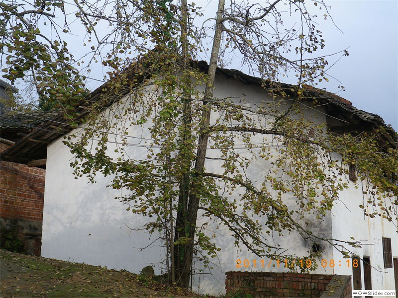
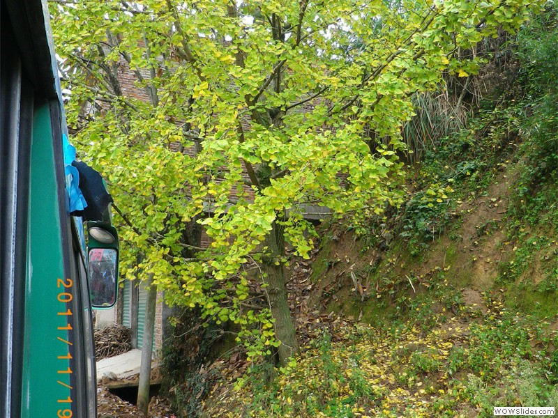

San Francisco
San Francisco Listeni/sæn frənˈsɪskoʊ/, officially the City and County of San Francisco, is the leading financial and cultural center of Northern California and the San Francisco Bay Area. The only consolidated city-county in California,[11] San Francisco encompasses a land area of about 46.9 square miles (121 km2)[12] on the northern end of the San Francisco Peninsula, giving it a density of about 17,620 people per square mile (6,803 people per km2). It is the most densely settled large city (population greater than 200,000) in the state of California and the second-most densely populated major city in the United States after New York City.[13] San Francisco is the fourth most populous city in California, after Los Angeles, San Diego and San Jose, and the 14th most populous city in the United States—with a Census-estimated 2012 population of 825,863.[14] The city is also the financial and cultural hub of the larger San Jose-San Francisco-Oakland metropolitan area, with a population of 8.4 million. San Francisco (Spanish for "Saint Francis") was founded on June 29, 1776, when colonists from Spain established a fort at the Golden Gate and a mission named for St. Francis of Assisi a few miles away.[15] The California Gold Rush of 1849 brought rapid growth, making it the largest city on the West Coast at the time. Due to the growth of its population, San Francisco became a consolidated city-county in 1856.[16] After three-quarters of the city was destroyed by the 1906 earthquake and fire,[17] San Francisco was quickly rebuilt, hosting the Panama-Pacific International Exposition nine years later. During World War II, San Francisco was the port of embarkation for service members shipping out to the Pacific Theater.[18] After the war, the confluence of returning servicemen, massive immigration, liberalizing attitudes, and other factors led to the Summer of Love and the gay rights movement, cementing San Francisco as a center of liberal activism in the United States.
Boston
Boston (pronounced Listeni/ˈbɒstən/) is the capital and largest city of the state of Massachusetts (officially the Commonwealth of Massachusetts), in the United States. Boston also serves as county seat of the state's Suffolk County. The largest city in New England, the city proper, covering 48 square miles (124 km2), had an estimated population of 636,000 in 2012,[4] making it the 21st largest city in the United States. The city is the anchor of a substantially larger metropolitan area called Greater Boston, home to 4.5 million people and the tenth-largest metropolitan area in the country. Greater Boston as a commuting region is home to 7.6 million people, making it the sixth-largest Combined Statistical Area in the United States. One of the oldest cities in the United States, Boston was founded on the Shawmut Peninsula in 1630 by Puritan colonists from England.[12] It was the scene of several key events of the American Revolution, such as the Boston Massacre, the Boston Tea Party, the Battle of Bunker Hill and the Siege of Boston. Through land reclamation and municipal annexation, Boston has expanded beyond the original peninsula. Upon American independence from Great Britain, the city continued to be an important port and manufacturing hub, as well as a center for education and culture.[13] Its rich history helps attract many tourists, with Faneuil Hall alone attracting over 20 million visitors. Boston's many "firsts" include the United States' first public school (1635),[15] and first subway system (1897).The area's many colleges and universities make Boston an international center of higher education and medicine, and the city is considered to be a world leader in innovation for a variety of reasons.[17][18] Boston's economic base also includes finance,[19] professional and business services, and government activities.[20] The city has one of the highest costs of living in the United States,[21] though it remains high on world livability rankings.[22]

Syracuse
Syracuse (/ˈsɪrəkjuːs/ or local /ˈsɛrəkjuːs/) is a city in and the county seat of Onondaga County, New York, United States. It is the largest U.S. city with the name "Syracuse", and is the fifth most populous city in the state of New York.[1] At the 2010 census, the city population was 145,170 (making it the 175th largest city in the country), and its metropolitan area had a population of 662,577. It is the economic and educational hub of Central New York, a region with over a million inhabitants. Syracuse is also well-provided with convention sites, with a downtown convention complex and, directly west of the city, the Empire Expo Center, which hosts the annual Great New York State Fair. The city derives its name from Siracusa, a city on the eastern coast of the Italian island of Sicily. The city has functioned as a major crossroads over the last two centuries, first between the Erie Canal and its branch canals, then of the railway network. Today, Syracuse is located at the intersection of Interstates 81 and 90, and its airport is the largest in the region. Syracuse is a home to Syracuse University, a major research university; the SUNY Upstate Medical University and Hospital, the city's largest employer; SUNY College of Environmental Science and Forestry, and other colleges and professional schools. In 2010 Forbes rated Syracuse 4th in the top 10 places to raise a family.[2]
Harvard
Harvard University is a private Ivy League research university in Cambridge, Massachusetts. Established in 1636 by the Massachusetts legislature and soon thereafter named for John Harvard (its first benefactor), Harvard is the United States' oldest institution of higher learning,[6] and the Harvard Corporation (formally, the President and Fellows of Harvard College) is its first chartered corporation. Although never formally affiliated with any denomination, the early College primarily trained Congregationalist and Unitarian clergy. Its curriculum and student body were gradually secularized during the 18th century, and by the 19th century Harvard had emerged as the central cultural establishment among Boston elites.[7][8] Following the American Civil War, President Charles W. Eliot's long tenure (1869–1909) transformed the college and affiliated professional schools into a modern research university; Harvard was a founding member of the Association of American Universities in 1900.[9] James Bryant Conant led the university through the Great Depression and World War II and began to reform the curriculum and liberalize admissions after the war. The undergraduate college became coeducational after its 1977 merger with Radcliffe College. Drew Gilpin Faust was elected the 28th president in 2007 and is the first woman to lead the university.
- 
- 